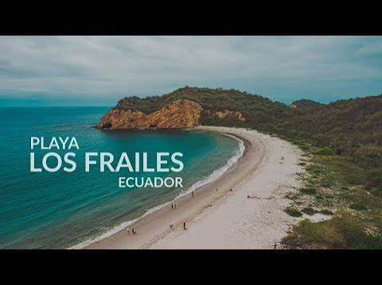

Descubre la magia de Puerto López
Playas, naturaleza, gastronomía y aventuras te esperan en uno de los destinos turísticos más atractivos de Manabí.
Conoce nuestros destinosAgencia de Turismo Puerto López
Puerto López es un hermoso destino turístico ubicado en la provincia de Manabí, Ecuador. Es reconocido por sus playas, su riqueza natural, sus excursiones marítimas y su deliciosa gastronomía.
Atractivos destacados

Isla de la Plata
Un lugar ideal para realizar excursiones marítimas, observar aves y disfrutar la naturaleza.

Playa Los Frailes
Una de las playas más conocidas de la zona, rodeada por paisajes naturales y aguas tranquilas.

Avistamiento de ballenas
Vive la experiencia de observar ballenas jorobadas durante la temporada de avistamiento.
¡Prepárate para una nueva aventura!
Conoce nuestros destinos y descubre todo lo que Puerto López tiene para ofrecer.
Ver nuestros servicios